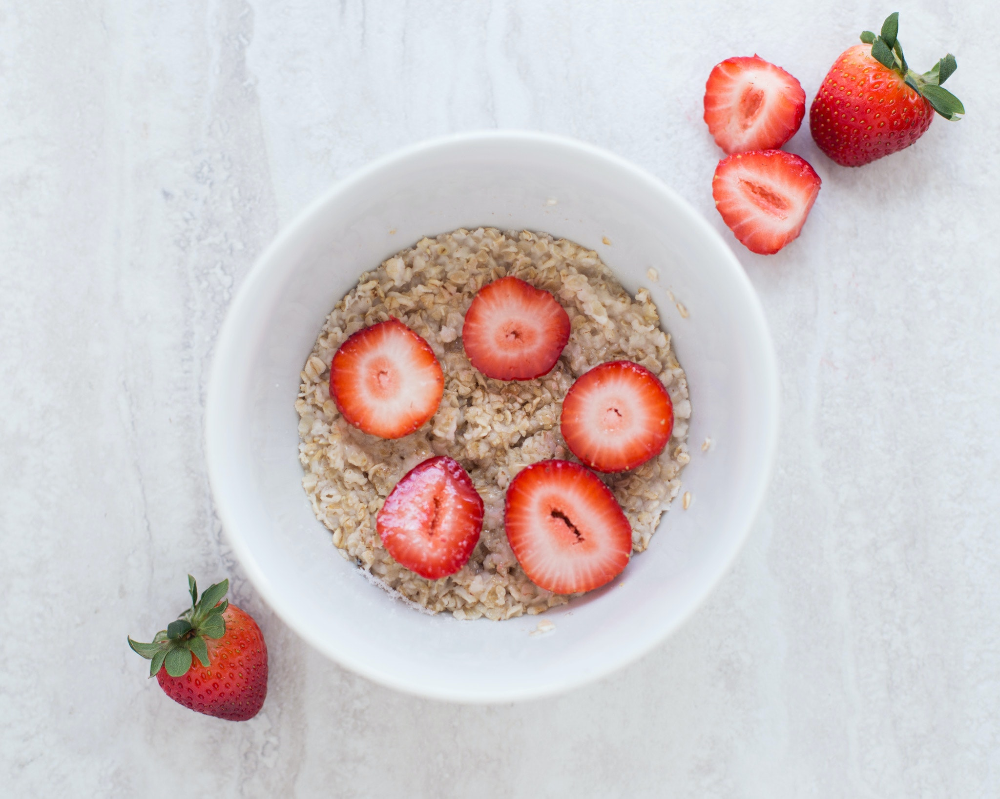
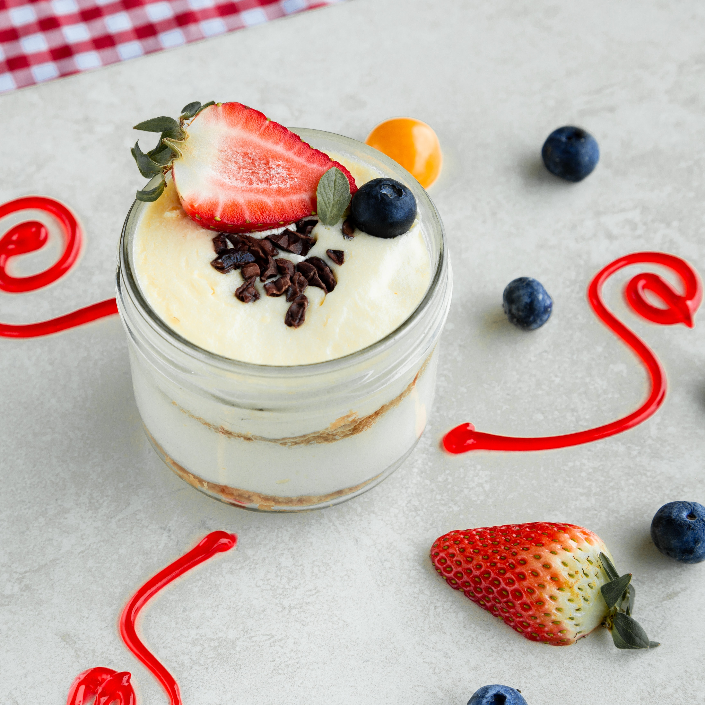

Welcome to Breakfast Recipes
We provide a wide range of healthy and delicious recipes to help you maintain a balanced diet and improve your health.
Latest Recipes
- Oatmeal & Fruit
- Yogurt parfait
- Egg white omelet
Recipe 1: Oatmeal with berries and nuts Ingredients: 1 cup rolled oats 1 cup milk 1/2 cup berries (any type) 1/4 cup nuts (any type, chopped) 1 tablespoon honey (optional) Instructions: Combine oats, milk, and berries in a saucepan over medium heat. Bring to a boil, then reduce heat and simmer for 5 minutes, or until oats are cooked through. Stir in nuts and honey (if using). Serve warm.
Recipe 2: Yogurt parfait Ingredients: 1 cup yogurt 1/2 cup granola 1/4 cup fruit (any type, sliced) 1 tablespoon honey (optional). Instructions: Layer yogurt, granola, fruit, and honey in a glass or jar. Repeat layers as desired. Serve immediately.
Recipe 3: Egg white omelet Ingredients: 6 egg whites 1/4 cup milk 1/4 cup vegetables (any type, chopped) 1/4 cup cheese (any type, shredded) Salt and pepper to taste. Instructions: Whisk egg whites, milk, vegetables, cheese, salt, and pepper together in a bowl. Heat a nonstick skillet over medium heat. Pour egg mixture into skillet and cook until set, about 2 minutes per side. Serve immediately.